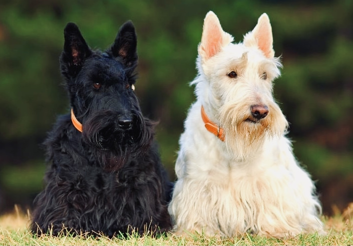

The Scottish Terrier
Confident, Independent, Spirited
History
Developed to hunt rats, foxes, and badgers on the craggy Scottish Highlands, the Scottish Terrier is a venerable breed. In fact, it is thought to be the oldest of the Highland terriers. And one authority calls the breed “the oldest variety of the canine race indigenous to Britain.” At various times in the breed’s long history there has been controversy about its origins and type. In fact, dog folks spent much of the 1800s arguing over what was a Scottish Terrier and what was a terrier that happened to be Scottish. Despite his humble farm-dog origins, the Scottie had friends in high places. In the 17th century, England’s King James I, a Scot by birth, was well acquainted with the breed and gave them as gifts.
The first Scottie imports arrived in America in 1883, and two years later the AKC registered its first Scottie, a male named Prince Charlie. The Scottie’s peak of popularity was the 1930s and early ’40s, with such celebrity owners as Humphrey Bogart and Bette Davis under the spell of the breed’s spicy charm. The Scottie silhouette is a familiar motif of Depression-era knickknacks and advertising, and the image is still popular today with textile makers looking for a sporty retro-kitsch accent for their designs. History’s most famous Scottie was Fala, the constant companion of President Franklin Roosevelt during World War II.
Characteristics
The well-known Scottie silhouette is that of a short-legged but substantial terrier with distinctive furnishings at the beard, legs, and lower body. Bright, piercing eyes, and erect ears and tail, convey keen alertness—a hallmark of Britain’s terrier breeds.The wiry topcoat and soft, dense undercoat coat can be black, wheaten yellow, and brindle.
Temperament
An independent and stubborn character, the Scottish Terrier dog breed is also quite sensitive to praise and blame. Independent, intelligent, and hilarious in their dignified seriousness, they’re a true terrier, which makes them an excellent watchdog.
The Scottie working style has been described as efficient and businesslike, and their aloofness toward strangers makes them excellent watchdogs. Their hunting instinct remains strong, which can complicate life for the neighbor’s cat, and Scotties are known to be cantankerous around other dogs. This bold and clever Scotsman enjoys brisk walks and upbeat play.
A Presidential Favorite
The Scottish terrier and the German shepherd are the only two breeds to make three appearances in the White House. The Roosevelt family was infatuated with the breed and had two: Eleanor Roosevelt had one named Meggie and FDR had one named Fala (short for Murray the Outlaw of Falahill). Roosevelt loved his dog so much that he was scarcely seen without it. You can even see a statue of Fala next to his bronzed owner at the Franklin Delano Roosevelt Memorial in Washington D.C. Eisenhower was also a fan of the smart looking dogs and had three named Telek, Skunkie, and Caacie (though there is some argument about whether any actually lived in the White House). Most recently George W. Bush had two named Barney and Miss Beazley. Barney was something of a movie star and appeared in nine White House-produced films.